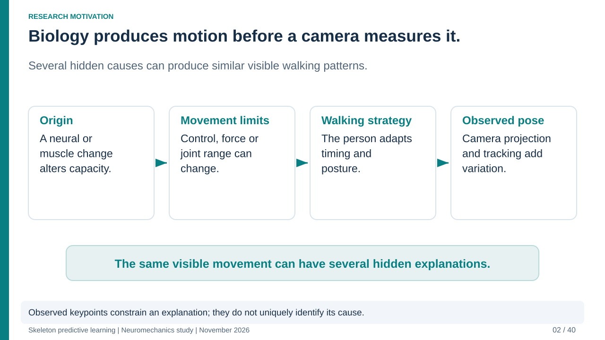

Speaker notes and sources
This is a conceptual forward chain, not an estimated causal graph for GAVD. Control, muscles, mechanics, compensation, projection and pose estimation each affect the observation. Naming a latent variable weakness does not validate that interpretation.
Original detailed vector diagram: